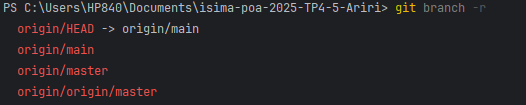
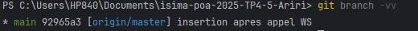

Travailler avec Git
Dernière mise à jour : 2025-11-01
Comment déposer un projet sur GitHub/GitLab
Étape 1 : Initialisation
- Le projet est dans un dossier ; on ouvre le terminal bien sûr dans le dossier et on initialise avec un dépôt git :
git init
Étape 2 : Committer les fichiers
- La première chose à faire c'est de pré-ranger les fichiers à déposer : dans le premier dépôt nous on veut déposer tous le dossier donc on indique "." pour préciser que c'est le dossier courant qui contient tous les fichiers. On tape la commande suivante :
git add . - Après on enregistre ce qu'on a préparé avant (on fait ça avec la commande commit) et on ajoute un message :
git commit -m "Initial commit"
Étape 3 : Création du dépôt distant
- Sur GitHub/GitLab je dois créer un dossier ; et après j'obtiendrai un URL de projet
- Après je dois ajouter un dépôt distant pour créer le lien entre mon PC et GitHub/GitLab avec la commande :
git remote add <NAME> <URL>- Name : C'est juste un alias de l'URL pour ne pas le répéter dans tous les commandes.
- Pour vérifier les dépôts distants déjà configurés on tape :
git remote -v - Pour changer l'URL d'un dépôt qui existe déjà :
git remote set-url <NAME> <New URL>
Étape 4 : Push ton code
- Avant de pousser le code je dois créer un branch sur lequel je pousse ; on fait ça avec la commande :
git branch <nom branch> - Maintenant on doit envoyer nos commits qui sont local avec la commande :
git push -u <name of distant depot> <branche envoyée>
Informations sur l'état du dépôt
- Pour lister les branches distantes (pour les branches locales on eneleve le -r) :
git branch -r

origin\HEAD -> origin\main : indique la branche principale (default).
orign\main : indique une branch distante normale(les autres aussi).
- Pour lister les branches locales et indiquer à queel branches distantes sont liées :
git branch -vv

* main : c'est le nom de la branch locale actuelle.
92965a3 : le hash dcu dernier commit.
[origin\master]:la branche distante liée à main.
Changer la branche distante de suivi
*c'est à dire le main qui est liée à origin/master comment ja le lie à origin/main ?
git push -u origin main #il faut qu'on soit sur la branche locale main
La commande aussi push ce qui est dans la branch locale vers la branche distante
suprrimer une branche distante
- cette commande supprime la branche origin\master :
git push origin --delete master